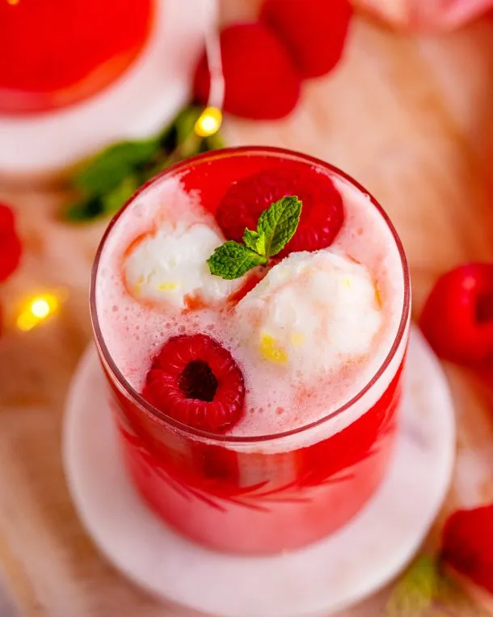

New Year's Eve Sherbet Punch

Description
This sherbet punch is such a fun, and sweet bubbly drink. It makes a lot, is perfect for any get togethers, and especially suitable for a Christmas or New Year's Eve party!
Ingredients
- Strawberry Kool-Aid powder
- Water
- Pineapple Juice
- Cranberry Ginger Ale -- or regular Ginger Ale
- Pineapple Sherbet
- Pineapple Rings
- Raspberries
Steps
- Add the Strawberry Kool-Aid powder to a large punch bowl.
- Pour in the water and stir it together until the powder is totally dissolved
- Stir in the pineapple juice
- Stir in the ginger ale
- Add scoops of the sherbert into the punch bowl
- Add pineapple rings and raspberries, and serve immediately